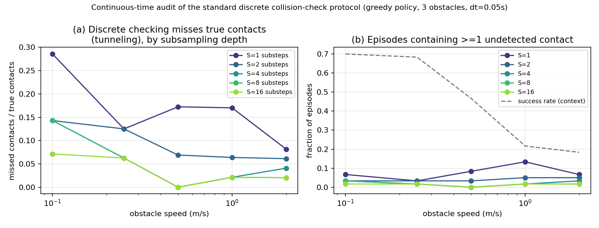
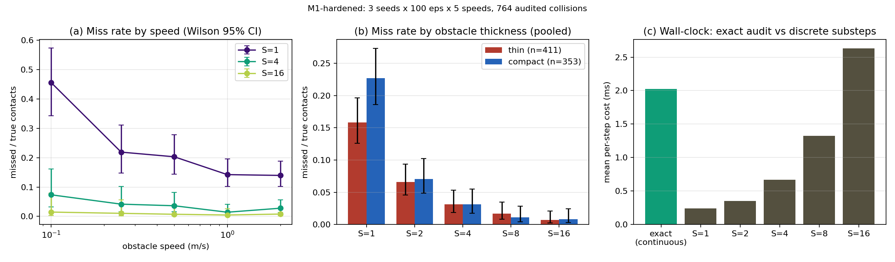

三項查證:關閉兩項,皆為利多
| 查證項 | 結果 | 影響 |
|---|---|---|
| DRP 程式碼可得性 | 已關閉 程式碼 + IMPACT 權重已釋出(pre-release):github.com/deep-reactive-policy/drp,完整版宣稱 2026-06;DRPBench 場景檔是否隨附未確認 | M2 之後可用真實 SOTA 當對照/宿主,不需重造 |
| 拱心石新穎性(佔據預報輔助任務) | 已關閉(六種檢索) 無先例。最接近:arXiv:2508.20457(協作機器人避障)用佔據預測器但凍結後才跑 RL(全文引句確認「encoder-decoder and safety critic frozen」)——感知模組模式,非輔助任務模式 | 界線乾淨,且該文成為我們的關鍵引文;引文圖譜檢索仍建議寫作前補一輪 |
| EAAI 競品全文 | 仍未關閉 ScienceDirect 403;無 arXiv/機構庫版本。狀態表徵與獎勵形式仍僅摘要級 | 維持 Loop 3 的處理:機制錯開論證不依賴其全文細節 |
M0 完成:連續時間真值檢查器上線(code/,pytest 20/20)
- Panda 運動學(
godynur/panda.py):modified DH(與 URPlanner Eq.4 同convention)、URPlanner 連桿合併((1,2),(3,4),(5,6),(7,法蘭)→4 段,paper 原文確認)、關節極限。從 URPlanner PDF 全文抽出並對齊:a_o=5cm、ζ=1、M=2、N=3;a_r 論文未給數值→設 config,問師兄 - 靜態幾何(
geometry.py):Eq.6–10 的 slab 法重疊長 + UOAR,對 brute-force 採樣 100 案例驗證 - 連續時間核心(
continuous.py):τ-線性化下 slab 有理函數的斷點枚舉法(線性/二次根),精確 τ*(非採樣)、掃掠重疊積分(分段 Gauss-Legendre)、引理膨脹。驗證:對 4001 點密集掃描 300 隨機案例一致;Δt→0 退化回靜態 UOAR(Loop 3 的相容性宣稱,已實測);穿隧回歸案例——4 m/s 薄盒在步間穿過線段,離散端點檢查兩頭全綠、連續檢查器在 τ*≈0.0525s 抓到
引理更正:初稿弦誤差界被自己的測試否證
藍圖初稿的 ε_lin = ΣᵢRᵢδθᵢ²/8 不成立:它把多關節同動當成獨立弧誤差相加,漏掉 FK Hessian 的交叉項 ∂²p/∂qᵢ∂qⱼ (i≠j)。隨機測試給出反例:實測偏差 2.36mm > 宣稱上界 1.99mm。重新推導(利用 ∂/∂qᵢ(p−oⱼ) = zᵢ×(p−oⱼ) 的鏈式恆等式,得 |Hᵢⱼ| ≤ 2Rmax(i,j)):ε_lin = ¼(Σᵢ√Rᵢ·|δθᵢ|)²,經 200 隨機構型 × 3 內插點驗證全部覆蓋。代價:此界實測約 30 倍保守——動作剪裁 |δθ|≤0.05 rad/步時 ε_lin≈2cm,仍在膨脹預算內;以精確 Hessian 範數收緊列為已知改進路徑。藍圖 §保守性引理已同步更正。
M1:穿隧率實驗(300 episodes,5 個速度級)
協議:貪婪目標追逐策略(候選動作 + 標準離散端點碰撞檢查——正是 DRL 訓練迴圈的做法;不含任何學習,使現象歸屬於「檢查協議」而非「策略好壞」),在 3 障礙動態場景跑 60 episodes × 5 個速度級(0.1–2.0 m/s,含薄板與方塊障礙)。每一步同時做:(1) 連續真值稽核(精確 τ*);(2) S∈{1,2,4,8,16} 子步離散檢查。碰撞即終止(碰撞是 terminal)。Δt=0.05s、|δθ|≤0.05 rad/步、a_r=0.06m。單 seed,總運行 30 秒。

| 障礙速度 (m/s) | 真實碰撞 episode 數 /60 | S=1 漏檢 | S=2 | S=4 | S=8 | S=16 | 成功率(脈絡) |
|---|---|---|---|---|---|---|---|
| 0.1 | 14 | 4 (29%) | 2 | 2 | 2 | 1 | 70% |
| 0.25 | 16 | 2 (13%) | 2 | 1 | 1 | 1 | 68% |
| 0.5 | 29 | 5 (17%) | 2 | 0 | 0 | 0 | 47% |
| 1.0 | 47 | 8 (17%) | 3 | 1 | 1 | 1 | 22% |
| 2.0 | 49 | 4 (8%) | 3 | 2 | 1 | 1 | 18% |
| 合計 | 155 | 23 (14.8%) | 12 (7.7%) | 6 (3.9%) | 5 (3.2%) | 4 (2.6%) | — |
兩個發現:一個如預期,一個推翻 H1(且更強)
標準離散檢查漏掉 14.8% 的真實碰撞;16 倍子採樣仍漏 2.6%。「多插幾個採樣點就好」的反駁現在有成本曲線可答:S=16 意味著 16 倍檢查成本,仍漏 4/155——而我們的斷點法檢查器成本與少量子步同量級、且精確。這正是論文 Figure-1 + 反駁表的素材。
藍圖 H1 預測「穿隧率隨障礙速度單調上升」。數據:絕對碰撞數隨速度暴增(14→49 / 60 episodes),但 S=1 漏檢率不單調——在最慢的 0.1 m/s 也有 29%(4/14,小樣本)。物理解釋:穿隧由相對掃掠速度驅動,而機械臂自己的遠端連桿在 0.05 rad/步 × 20Hz 下可達 ~1 m/s——手臂自身的運動就足以掃過薄障礙而不被端點檢查看見。修正後的 H1':「離散檢查的漏檢在所有障礙速度下都存在(相對掃掠是驅動因子,機械臂自身運動貢獻常數項);碰撞頻率隨障礙速度上升」。這比原 H1 更強:它意味著連準靜態場景的 manipulator RL 基準都低估了碰撞,不只是快障礙場景。
M1 加固版:3 seeds × 100 eps × 5 速度級,764 次碰撞稽核——第三個反直覺發現

| 障礙速度 (m/s) | 碰撞數 | S=1 漏檢率 [95% Wilson CI] | S=4 | S=16 |
|---|---|---|---|---|
| 0.1 | 68 | 45.6% [34.3%, 57.3%] | 7.4% | 1.5% |
| 0.25 | 96 | 21.9% [14.8%, 31.1%] | 4.2% | 1.0% |
| 0.5 | 138 | 20.3% [14.4%, 27.8%] | 3.6% | 0.7% |
| 1.0 | 211 | 14.2% [10.1%, 19.6%] | 1.4% | 0.5% |
| 2.0 | 251 | 13.9% [10.2%, 18.8%] | 2.8% | 0.8% |
| 合併 | 764 | 19.0% [16.4%, 21.9%] | 3.1% [2.1%, 4.6%] | 0.8% [0.4%, 1.7%] |
第一輪 300 eps 看到的「低速也有漏檢」在 764 次碰撞下變得更尖銳:0.1 m/s 時漏檢率 45.6%,是 2.0 m/s(13.9%)的三倍多,且 CI 不重疊。機制:低速下的碰撞由機械臂自身掃掠主導——短暫的擦掠式接觸(碰了就分開),端點檢查幾乎必然錯過;高速障礙則是「撞進來就留在裡面」,端點看得見。推論:所有用離散檢查的 manipulator 基準,在準靜態場景高估安全性最嚴重——這正是多數論文自認最可靠的實驗區。
- 厚度直覺也錯了:compact 障礙漏檢率(22.7% [18.6%, 27.3%], n=353)高於薄板(15.8% [12.6%, 19.7%], n=411)。解釋(暫定):驅動因子是擦掠機率(總截面小的物體更容易被擦過即離)而非「薄」本身——薄板另外兩維大(10–25cm 半寬),一旦接觸大面就會停留到端點。寫論文時以「grazing vs plow-in」框架呈現,標記為觀察性解釋
- 成本結論在規模下成立:精確稽核 1.50 ms/步 < S=16 離散(1.92 ms/步,仍漏 0.8%);S=8(0.97ms)漏 1.4%。純 Python+NumPy 未優化——「精確性的價格 ≈ 8 個子步」,而且兩邊可同幅度加速
- 細節:
experiments/m1_hardened.py,結果experiments/results/m1_hardened/(m1h_results.json 含每筆碰撞的速度/seed/厚度/嚴重度/各 S 是否抓到)
被 S=1 漏掉的 145 次碰撞 vs 被抓到的 619 次:最大重疊長中位數 1.4cm vs 10.2cm、接觸時長中位數 0.48 vs 0.68——漏掉的確實偏向擦掠,但尾部不可忽視:漏掉者的 q75 = 3.6cm、最大 25.1cm(深度接觸,協議完全看不見)。兩面都要寫進論文:漏掉的碰撞「典型較輕、但含深接觸尾部」——對 HRC 而言,一個漏掉 19% 接觸事件、其中四分之一侵入超過 3.6cm 的安全帳本,不能稱為 sound。
誠實邊界(寫論文前必須處理)
小樣本已解決:加固版 3 seeds × 764 碰撞 + Wilson CI,主要結論(合併 19.0% [16.4%, 21.9%]、低速最糟的反直覺趨勢)在 CI 下站得住- 協議研究,非策略研究:貪婪腳本策略刻意不含學習;數據刻畫的是檢查協議的性質。訓練後策略的漏檢率留給 M1b(DRP 權重稽核)/M3 實測
- 場景分布:薄板佔一半是設計選擇;加固版已按厚度分層報告(且發現 compact 反而更容易被漏——見發現三),分布選擇的影響已可量化
- a_r=0.06m 是佔位值:URPlanner 論文未給數值,需與師兄對齊後重跑(結論的方向不受影響,數值會動)
擦掠 vs 侵入的深度未分層已解決:嚴重度分層完成(見上)——漏掉的碰撞典型較輕(中位 1.4cm)但含深接觸尾部(q75 3.6cm、最大 25.1cm),「missed ≠ mild」成立且不過度宣稱
拱心石判定:存活(條件式通過),經一次架構迭代
測試:佔據預報器(k=3 幀歷史)能否在未來佔據 IoU 上同時贏過 (1) persistence(複製最後一幀)與 (2) velocity-blind k=1 對照?預註冊判準:中高速雙贏,否則拱心石死。v1 失敗暴露兩個測試設計錯誤:bottleneck 解碼器無 identity 捷徑(重建能力混淆了運動預測)、預測地平線 50ms 太短(0.5 m/s 障礙每步僅移半個體素,persistence 物理上近乎最優)。v2 修正:U-Net skips + 最後一幀直通輸出層;地平線改 0.2s(對避障有意義的預警距離)。
| 速度 (m/s) | k3 | k1 對照 | persistence | 判定 |
|---|---|---|---|---|
| 0.1 | 0.351 | 0.249 | 0.723 | 輸 persist(物理必然:0.2s 僅移 2cm < ½ 體素,無運動可學) |
| 0.25 | 0.309 | 0.246 | 0.425 | 輸 persist |
| 0.5 | 0.251 | 0.219 | 0.209 | PASS |
| 1.0 | 0.148 | 0.094 | 0.059 | PASS(2.5× persist) |
| 2.0 | 0.063 | 0.026 | 0.014 | PASS(4.5× persist) |
拱心石存活:預註冊判準(中高速雙贏)通過;k3 > k1 於全部速度成立——「預報輔助任務能把運動資訊壓入潛向量」的機制兩輪皆確認。三個誠實條件:(1) 絕對預報品質仍弱(高速 IoU 僅 0.06–0.15,任務含反彈的不可約不確定性;RL 輔助任務只需要梯度訊號,但也要防它太弱)——GPU 加大訓練、dice/focal loss 是既定加強路徑;(2) 「預報器兼任部署期體素屏蔽的檢查對象」這個雙角色設計尚未驗證,以目前精度不可行——部署屏蔽的退路是常速外推體素(解析,免學習),把預報器限縮在潛狀態角色;(3) 輔助地平線定為 ~0.2s(或多地平線),寫入 M2-full 設計。訓練成本註記:CPU(16 核殘餘)每模型 ~20 分鐘,4000 步——GPU 版(本機 3070)可放大 10 倍預算。
下一步(M1 收尾 → M2 開工)
- M1 論文化加固:episodes ×5、3 seeds、Wilson CI、按厚度分層、計時對比(斷點法 vs S-子步的牆鐘時間)——半天工程
- M1b(強化 Figure-1):對 DRP 公開權重做同樣的連續時間稽核(它的動作是 10 步 action chunk,正好是連續稽核的絕佳對象)——把「協議研究」升級成「SOTA 也存在此盲點」的實證
- M2 開工:解析光柵化器(盒→體素,閉式)+ 佔據預報輔助頭 + 柵格編碼器,進入拱心石驗證(H2)
- 見師兄:a_r 數值、柵格語義(二值 vs 距離場)、特權訓練架構的認可、算力/真機檔期(問題清單在 Loop 6 §給師兄)